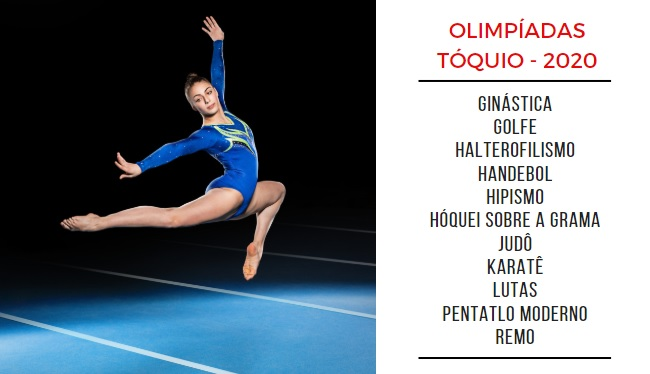
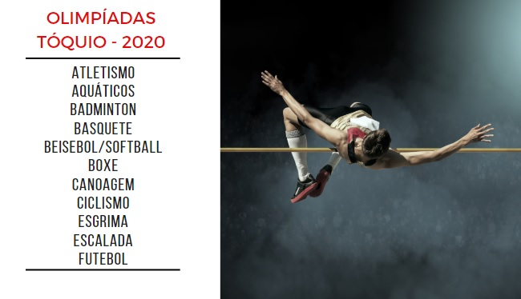
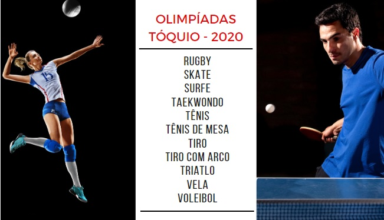

História
Os Jogos Olímpicos se originaram em Olímpia (Grécia antiga) em meados de 776 a.C. Naquele período, os jogos eram realizados em homenagem aos deuses gregos, sendo que Zeus era o mais homenageado. Além disso, os jogos eram realizados com a intenção de promover a amizade e integração entre os povos.
O único esporte, até a décima terceira competição, era a corrida. No quinto século antes de Cristo, já eram dez modalidades esportivas disputadas: corrida, salto em distância, lançamento de dardo, pentatlo, arremesso de disco, pancrácio, boxe, luta, corrida de bigas e corrida de cavalo.
Os primeiros jogos olímpicos da era moderna foram realizados em Atenas, em 1896. Os 285 atletas de 13 países disputaram provas de atletismo, esgrima, luta livre, ginástica, halterofilismo, ciclismo, natação e tênis.
Os jogos olímpicos ocorrem de quatro em quatro anos e conta com a participação de atletas de quase todos os países do mundo. Os vencedores das competições sobem ao pódio e recebem medalhas, ou seja, para o primeiro colocado, a medalha de ouro, para o segundo a de prata e para o terceiro a de bronze.
A classificação dos países vai acontecendo de acordo com a quantidade de medalhas de ouro obtidas, em caso de empate são contadas as de prata, persistindo o empate são contadas as de bronze. Depois, segue-se o hastear das bandeiras das nações dos vencedores e ouve-se o hino nacional do 1º classificado.
Anéis Olímpicos
O símbolo das Olimpíadas e do Comitê Olímpico Internacional é formado por cinco anéis entrelaçados que simbolizam os cinco continentes, cada um representado por uma cor: Oceania (verde), Ásia (amarelo), África (preto), Europa (azul) e América (vermelho).
Os anéis olímpicos simbolizam os continentes unidos pelo esporte. Os cinco aros entrelaçados numa bandeira de fundo branco foram idealizados em 1914. Foi o Barão Pierre de Coubertin, criador dos Jogos Olímpicos Modernos, o responsável pela criação desses aros, que são o símbolo olímpico.
Com o objetivo de representar a união dos países, eles salientam a importância em respeitar as diferenças que possam existir entre cada um deles. Isso serviria como mecanismo de combate à rivalidade vivenciada na época, um sentimento que surgiu no fim da primeira guerra, e que se fundamentava no desejo de que os estados deveriam ser fortes e centralizadores.
Assim, as argolas das olimpíadas foram utilizadas pela primeira vez em 1920, na sétima edição dos Jogos Olímpicos da Era Moderna, que teve lugar na Antuérpia. Em 1916 as olimpíadas haviam sido interrompidas em detrimento da Primeira Guerra Mundial. Além de ser o principal símbolo das Olimpíadas, os arcos olímpicos também são o símbolo do COI - Comitê Olímpico Internacional.
Olimpíadas no Brasil
A primeira mulher atleta e brasileira a disputar uma Olimpíada foi Maria Lenk, que não conquistou medalhas, mas rompeu um preconceito e conquistou o espaço da mulher brasileira nos jogos Olímpicos em 1932.
O Comitê Olímpico brasileiro já participou de 20 edições dos Jogos Olímpicos e obteve uma conquista de 99 medalhas. A primeira participação do Brasil nos Jogos Olímpicos foi em 1920 na qual Antuérpia, na Bélgica foi sede.
Na edição de 1920 das Olimpíadas, onde participou pela primeira vez, o Brasil teve a melhor colocação no Quadro de Medalhas, ficando na 15ª posição. Em Atlanta, na Olimpíada de 1996 foram conquistadas 15 medalhas, sendo 3 de ouro, 3 de prata e 9 de bronze, o maior total de medalhas conseguidas.
O maior número de medalhas de ouro conquistadas pelos atletas foi durante a participação dos Jogos em 2004. Os atletas brasileiros trouxeram um total de 5 medalhas, a maior conquista do país. O esporte que obteve maior número de medalhas é a Vela, um total de 17 medalhas, sendo 6 delas de ouro.
Emblema Tóquio 2020
As Olimpíadas Tóquio 2020 têm um emblema inspirado no “ichimatsu moyo”, formas quadriculadas características do período Edo (1603-1867), trazendo a predominância do azul índigo para representar o que a organização das Olimpíadas chama de “expressão da elegância e sofisticação do Japão”. O emblema de Tóquio 2020 é constituído de três formas retangulares, que representam diferentes países e culturas. A mensagem escolhida para a 32ª edição das Olimpíadas é “unidade na diversidade”, atribuindo ao esporte a função de celebrar as diferenças.
Modalidades
- 
- 
- 